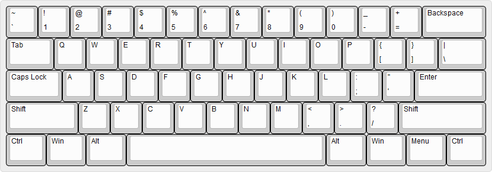
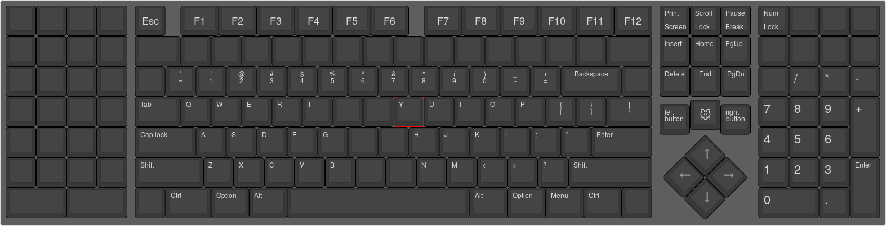

BOARDS
BOARDS
Something that is often overlooked when it comes to ease of use and typing sensation on a keyboard is the actual board itself. The board has a large effect on the senation that you get from typing. Factors such as the size of the board, the material its made of and the key layout all play a part when typing. This page explains how each of these factors affects the typing experience, helping you choose the right one for yourself.
LAYOUT
All keyboards have some sort of key layout. Layouts are generally standardised. Most keyboards follow the "qwerty" layout, which is convenient, as you don't have to memorise the positions of the keys every time you type on a different keyboard. However, you will find that it is common for certain keys to be located and/or shaped differently on different keyboards.
There are different standard layouts in different countries, which makes purchasing keyboards a little more tedious. There are layouts such as ANSI, ISO and JIS. Pay attention to the layout that a keyboard is being sold in. It is recommended to get the format that is standard in the country you live in, or a popular format such as ANSI or ISO because most keyboard mods are made for those formats.
Beware of manufacturers that change the layout of the keys. Purchasing a keyboard from such manufacturers constricts you to modding your keyboard with parts only provided by the manufacturer.
So, while there may be a lot of different formats, there is no need to feel overwhelmed. All you need to know is that if you're buying a keyboard with a non-standard layout, it will be hard for you to modify your keyboard. It is highly recommended that you purchase a keyboard in standard layout, from a manufacturer that doesn't change the shape or placement of keys. A simple internet search should tell you whether a keyboard follows the standard or not.
SIZE
Boards come in different sizes. The sizes are generally denoted by a percentage, with the most commonly used size being the 100%. Other common sizes include the 60%, 75%, TKL and over 100%. The larger a keyboard, the more functionality it has, at the cost of taking up more space on your desk. Following are the most common sizes of keyboard:
The 100%

By far the most common is what is called the 100% keyboard. This has the standard "qwerty" key layout, plus some function keys (F1-F12), arrow keys, the keys above those and finally the ten-key pad to the far right. It is called the 100% because it is the most common size of keyboard and is expected to have the full functionality of one.
One reason why you might want to purchase this size of keyboard, is because it is unlikely to be missing anything that you need. Furthermore, a 100% in standard layout does not close off many modding/replacement options. For example, keycap sets are usually made for the 104 keys on a 100% keyboard.
However, if you don't use the ten-key pad on the far right of the keyboard, then there is not much reason to get a 100% keyboard. It takes up more space on your desk, and can lead to straing when typed on. Unless you really need that ten-key pad, you should consider getting a smaller size. A great alternative is the TKL (Tenkeyless) size. As the name suggest, this size gets rid of the ten key pad.
The TKL (Tenkeyless)

The TKL is essentially a 100% keyboard with the ten-key pad sliced off. Other than the missing ten-key pad, it is identical to a standard 100%. The ten-key pad takes up a considerable amount of space on your desk, which usually means you can't place the keyboard right in front of you. Pay attention next time you use a 100%. If you put your hands in the touch typing position on the keyboard, your right arm is likely more extended than your left. This causes strain, which is best avoided if you use a keyboard frequently. Other than that, you simply have more space for other things on your desk. Most people pretty much don't use the ten-key pad, so the TKL is a great option to consider.
The 60%
A very common size among enthusiasts is the 60%. This gets rid of the F1-F12 keys, as well as the arrow keys and the keys above those. Certain keys, such as "escape", are moved to a different position on the board to save space. Commonly, 60% keyboards will have a key labeled "fn", which works similarly to "ctrl". If it is pressed at the same time as certain keys, it will type certain inputs. These are usually keys like "insert", "delete", "up arrow" and other keys that have been removed from the board.
The great thing about the 60% is its size. They are very small keyboards which commonly follow the standard key layout. It takes up very little space on your desk. You can position it where you like, so that typing feels comfortable and doesn't cause strain.
This is pretty much the only size that can be considered portable. Portability is a factor that you may want to consider.In general, a 60% will have most of the functionality of a TKL, but hiding behind the fn key. It can be hard to get used to a 60%, because you need to learn the combinations of inputs before using it properly, which can be pretty frustrating. Furthermore, there is no standard layout for inputs mapped under the "fn" key, so each time you get a new 60%, you have to memorise them again.
The 75%

The 75% keyboard offers a highly optimised balance between a TKL and a 60%. Keys that would be removed on a 60% are instead bunched closer together, which results in a keyboard that is smaller than the TKL, but doesn't lose much functionality - some keys are removed. This is great because you don't have to make use of the "fn" as often, to type inputs such as "insert" or "up arrow", and the keyboard is still very small. Unfortunately, 75% is not as commonly available as other layouts.
The Over 100%
There are various sizes of keyboard over 100%, but they have been grouped together in this category because they are usually made with the same goal in mind; extra keys for more functionality. These keyboards often come with several extra keys that can be programmed to perform some sort of action or series of actions in a computer. These are called macros and they're great if you want to do specific things quickly. The possibilities of macros are endless.
The downside to these keyboards is that they're massive. If the benefit of these extra keys coonvinces you to buy one, make sure you have space on your desk to position the keyboard in a comfortable typing position, to avoid strain.
MATERIALS
The material that the board is made of can have a great impact on the typing sensation of the keyboard. Different materials give different vibrational feedback and make different sounds when a key is pressed. It is certainly worth taking the time to get a board made of a nice material. The most common material is plastic, but metal and wood see use as well.
Plastics
Plastics can have a wide variety of properties, which produce a different feel. However, the feel can generally be described with several qualities. First of all, plastics are quite muffling. The feedback upon bottoming out a key is not intense, as opposed to metal. Even hard plastics have a muffling effect, both on the feel and the sound. If one were to describe it using onomatopoeias, typing on plastic has a "thock" sound rather than a "clack" such as on metal.
Like all materials, plastics range in quality. This is reflected greatly in the typing sentation. A low quality, soft plastic will feel mushy to type on. Even mechanical keys, which have a very precise travel distance, feel inconsistent and unpredictable on a bad plastic. When purchasing a keyboard with a plastic base, make sure to take some time to determine whether the plastic is of good quality. Hard, solid plastics are what you should be looking for.
One great advantage of plastic is that it comes in virtually any colour (combination of colours) that you may want. This allows for a lot of customizability. Another advantage is that plastic is cheap, as opposed to wood and metal.
Metals
Metals have a much more solid feedback than other materials. There is a more distinct feel and sound when typing on a metal plate. The sound can be described as "clacky" and the feedback as solid. Unlike plastic, metal gives your keyboard a high quality feel.
One thing to be aware of is that metal attracts dust easily, so it's difficult to keep a metal board clean. You may want to consider pressurised air for cleaning the keyboard. Metal keyboards are also heavy and a little louder to type on than other keyboards.
Wood
Wood is the middle ground between metal and plastic in terms of feel. It has solidity similar to the metal, but also has similar muffling qualities to wood. Wood generally gives a keyboard a very premium look, though you may want to pair it with some matching keycaps. Wooden keycaps are rare and can be expenxive.